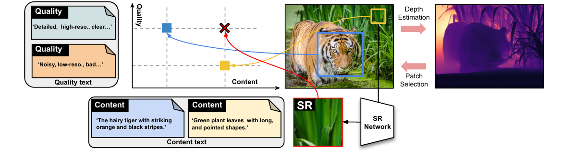
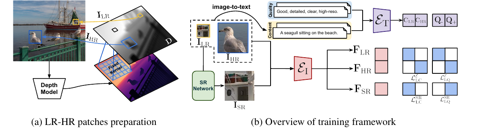
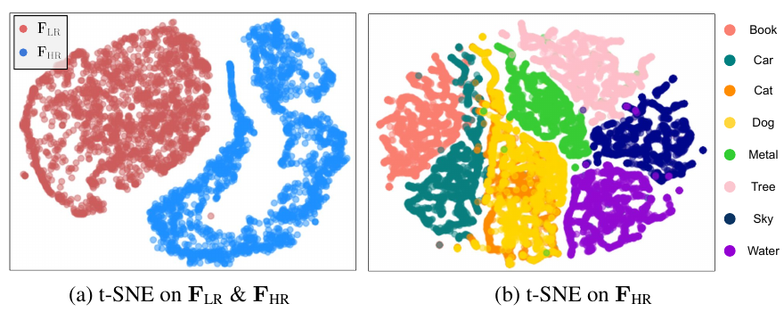
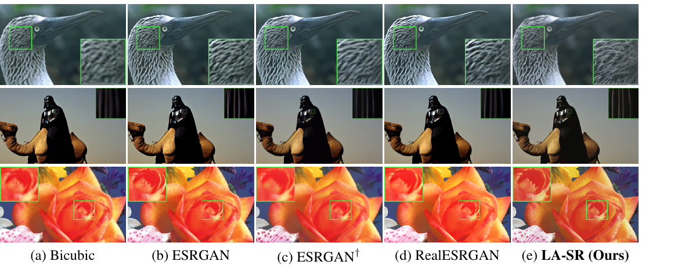

Language-Assisted Super-Resolution from Real-World Low-Resolution Patches

问题
真实超分要成对 HR-LR 数据, 现实拿不到;合成退化 (bicubic / ISP 管线) 抓不住真实退化的复杂度, 训出来在真图上泛化差。
数据观察
同一张高清图里, 远景因景深天然是真·LR、近景是 HR。用深度图 + top-k 就能从任意图抠出真实退化的无配对 LR/HR 补丁, 不需专用相机。
方法
把无配对超分重定义在 CLIP 语言空间:内容文本 (BLIP 生成) + 质量文本 ({good}/{bad}) 作锚, 两个对比损失分别管「保内容」和「拉画质」。
结果
真实低质数据 (DRealSR/CameraFusion/OST) 上无参考感知指标 (CLIPIQA/MUSIQ/TOPIQ/BRISQUE) 全面胜过合成退化训练的 RealESRGAN 与无/自监督基线。
SISR
单图超分辨率:从一张低分辨率图 (LR) 重建高分辨率图 (HR)。
成对 / 无配对
成对 = 每张 LR 都有对应 HR 真值可做逐像素监督;无配对 = 只有一堆 LR 和一堆无关的 HR, 没有一一对应。
合成退化
人工把 HR 降质造 LR (bicubic 下采样、加噪、模糊、JPEG、模拟 ISP)。便宜但和真实退化有域差。
CLIP
把图像和文本编码到同一空间、可算余弦相似度的视觉-语言模型。LA-SR 用它的图像/文本编码器当「懂内容也懂画质」的裁判。
对比损失 (InfoNCE)
拉近匹配对 (图↔它的文本)、推远不匹配对的损失。LA-SR 用它把图对齐到内容文本与质量文本。
深度图
每个像素到相机的相对距离图。这里用预训练 DepthFM 估计, 亮=远 (选作 LR 中心), 暗=近 (选作 HR 中心)。
无参考 IQA
不需真值 HR 就能给画质打分的指标:BRISQUE (越低越好)、CLIPIQA / MUSIQ / TOPIQ (越高越好)。感知超分的主战场。
DGDML-SR
LA-SR 的灵感来源 (Cheng 2020):也用景深抠 LR/HR, 但要求两块纹理相似才配对, 现实很少成立——LA-SR 去掉了这个约束。
1. 出发点 (Motivation)
超分的地基裂缝是数据。 训一个超分网络通常要成对的 HR-LR:同一内容, 一张高清一张低清, 好做逐像素监督。但真实世界几乎拿不到这种对——你没法让同一时刻同一场景既拍高清又拍低清。于是主流做法是人工造 LR:把 HR 用 bicubic 下采样, 或模拟相机 ISP 管线 (加噪、模糊、压缩)。
问题是合成退化不像真的。真实低清图的退化是镜头、传感器、抖动、景深、压缩层层叠加的复杂结果, 手工核和 ISP 模拟抓不全, 训出来的网络一遇真图就泛化崩。另一条路是用专用硬件 (分光棱镜双拍、多焦距相机) 采真实 LR-HR 对, 但要贵设备、还绑死在某个相机型号上, 换个场景又不灵。
LA-SR 的破题点是一个朴素观察 (受 DGDML-SR 启发):同一张高清照片里, 因为主体到相机的距离不同, 不同区域天然就有不同的分辨率——远处的草、树叶因景深模糊、占像素少, 本身就是「真·LR」;近处的虎清晰、占像素多, 是 HR (见 Fig. 1)。这意味着从任意一张高清图, 用深度就能抠出真实退化的 LR 和 HR 补丁, 不要专用相机、不要合成退化。
但这些 LR 补丁没有配对的 HR 真值 (远处那块草, 你没有它的高清版), 逐像素监督用不了。DGDML-SR 的老办法是在同图里找纹理高度相似的两块凑配对, 但「远处的草恰好和近处某块草长得一样」这种假设现实极少成立。
LA-SR 换个空间做监督:把无配对超分重定义在语言空间里。 用 CLIP 这类视觉-语言模型——它既懂语义内容也懂感知质量——不需要像素级配对, 只要让生成结果在语言空间里「内容对得上输入、质量对得上 HR」即可。具体两个损失:linguistic-content loss 保住输入内容, linguistic-quality loss 保证输出画质。
2. 方法 (Method)

说明:LA-SR 未开源代码 (arxiv、作者 Scholar / 主页均无仓库链接)。以下代码块为等价伪代码——非原文逐字, 据论文式 (1)–(5) 与 §3 重构, 用来锚定每个损失在算什么, 非可直接运行。
2.1 第一步:用深度抠出真实 LR/HR 补丁
先用预训练深度估计网络 (DepthFM) 得到每像素到相机的相对距离。这里有个细节:为了让「一整块补丁」的深度稳定 (而不是被单像素噪声带偏), 作者对深度图卷一个全 1 的大固定核 (\(\mathbb{R}^{1\times3\times29\times29}\)), 用邻域平均得到最终深度图 \(D\)。然后 top-k 选最远的 k 个像素作 \(I_{LR}\) 的中心、最近的 k 个作 \(I_{HR}\) 的中心, 抠出小的 \(I_{LR}\in\mathbb{R}^{h\times w\times3}\) 和大的 \(I_{HR}\in\mathbb{R}^{H\times W\times3}\), 其中 \((H,W)=(sh,sw)\), \(s\) 是放大倍数。与 DGDML-SR 的关键区别:不要求 LR/HR 纹理相似, 任意内容都能抠。
等价伪代码 — 非原文逐字 (据 §3.1 重构):深度引导的 LR/HR 补丁提取
def prepare_lr_hr(img, depth_model, s, h, w, k):
D = depth_model(img) # 每像素到相机的相对距离
D = avgpool_fixed_kernel(D, ksize=29) # 全1大核平滑: 按邻域定补丁深度
far = topk_pixels(D, k, mode="farthest") # 亮区=远 -> LR 中心
near = topk_pixels(D, k, mode="nearest") # 暗区=近 -> HR 中心
I_LR = crop(img, centers=far, size=(h, w)) # 小的真·LR 补丁
I_HR = crop(img, centers=near, size=(s*h, s*w)) # 大的 HR 补丁 (内容与 LR 无关)
return I_LR, I_HR
2.2 编码器:去掉位置编码的 CLIP
图像编码器 \(\mathcal{E}_I\)、文本编码器 \(\mathcal{E}_T\) 都取自预训练 CLIP。一个工程要点:CLIP 原生固定输入 224×224, 而这里补丁尺寸各异 (LR 56×56、HR/SR 224×224), 所以去掉图像编码器的位置编码, 让它吃可变尺寸输入。所有特征 \(\in\mathbb{R}^{1\times c}\) (batch=1 时)。
2.3 Linguistic-content loss:在语言空间保内容 (eq. 1–2)
以前的超分直接比 \(I_{SR}\) 和 \(I_{HR}\) 像素来保内容——这里没配对, 用不了。改为:先用图像转文本模型 (BLIP) 从 \(I_{LR}\)、\(I_{HR}\) 生成内容文本, 经 \(\mathcal{E}_T\) 得 \(C_{LR}\)、\(C_{HR}\);图像特征 \(F_{LR}\)、\(F_{HR}\)、\(F_{SR}\) 经 \(\mathcal{E}_I\) 得到。核心是一个对比函数:
—— 翻译: $\text{Cont}(A,B)$ 就是 InfoNCE 式对比——拉近配对 $(A_i,B_i)$ 的余弦相似度、推远与其它 $B_k$ 的相似度 ($\|$ 是沿 batch 维拼接)。$\mathcal{L}^{\mathcal{E}}_{LC}$ 把「LR 图↔LR 的内容文本」「HR 图↔HR 的内容文本」拉到一起, 同时和别的图/文本推开——即训编码器把图像对齐到它自己的内容描述。
对 SR 网络, 则要求生成图 \(I_{SR}\) 的特征 \(F_{SR}\) 和输入 \(I_{LR}\) 的内容文本 \(C_{LR}\) 强相关 (保证 SR 与输入同内容):
内容损失合起来 \(\mathcal{L}_{LC}=\mathcal{L}^{\mathcal{E}}_{LC}+\mathcal{L}^{SR}_{LC}\)。
2.4 Linguistic-quality loss:在语言空间拉画质 (eq. 3–4)
内容要 \(I_{SR}\) 和 \(I_{LR}\) 一致, 但质量要 \(I_{SR}\) 比 \(I_{LR}\) 更好 (它用更多像素表达同样内容)。前提假设:近处 \(I_{HR}\) 比远处 \(I_{LR}\) 细节更多。先准备两组质量文本:低质 (如 {bad}) 和高质 (如 {good}), 编成 \(Q_-\)、\(Q_+\)。训编码器把 \(F_{HR}\) 判为比 \(F_{LR}\) 更高质:
—— 翻译: 把「LR 图↔低质文本」「HR 图↔高质文本」拉到一起——教编码器沿质量轴区分 LR 和 HR。这一步让后面 $\mathcal{L}^{SR}_{LQ}$ 的梯度有意义:编码器得先真的能分好坏, SR 才有方向往「好」走。
对 SR 网络, 要求每个 \(I_{SR}\) 都对齐到唯一的高质文本 \(Q_+\) (不同于内容损失里每张图配各自的文本):
—— 翻译: 把生成图 $I_{SR}$ 的特征往高质文本 $Q_+$ 拉、往低质 $Q_-$ 推——直接命令「你要长得像 good, 别像 bad」。实际训练里 $Q_\pm$ 扩到 $N$ 个 batch, $*$ 取 $N$。
质量损失合起来 \(\mathcal{L}_{LQ}=\mathcal{L}^{\mathcal{E}}_{LQ}+\mathcal{L}^{SR}_{LQ}\)。下面伪代码把四个对比损失串起来:
等价伪代码 — 非原文逐字 (据式 1–4 重构):两组语言损失的联合计算
def cont(A, B): # InfoNCE 式对比 (式1)
S = cosine_sim_matrix(A, B) # (*, *)
pos = torch.exp(torch.diag(S)) # e^{cos(A_i, B_i)}
neg = (torch.exp(S) * (1 - eye)).sum(dim=1)# Σ_{k≠i} e^{cos(A_i, B_k)}
return -(torch.log(pos / neg)).mean()
# 图像特征 / 文本特征
F_LR, F_HR, F_SR = E_I(I_LR), E_I(I_HR), E_I(I_SR)
C_LR, C_HR = E_T(blip(I_LR)), E_T(blip(I_HR)) # 内容文本
Q_neg, Q_pos = E_T("bad ..."), E_T("good ...") # 质量文本
L_LC = cont(cat(F_LR, F_HR), cat(C_LR, C_HR)) + cont(F_SR, C_LR) # 式1 + 式2
L_LQ = cont(cat(F_LR, F_HR), cat(Q_neg, Q_pos)) \
- log(exp(cos(F_SR, Q_pos)) / exp(cos(F_SR, Q_neg))).mean() # 式3 + 式4
2.5 改良 VGG 损失 + 总损失 (eq. 5)
只靠两个语言损失可能保不住低频信息 (结构、颜色)。作者在 \(I_{SR}\) 与 \(I_{LR}\) 之间加一个改良的感知 (VGG) 损失——因两者分辨率不同, 对 \(I_{SR}\) 多加几层池化再取 VGG 特征。总损失:
其中 \(\lambda_{LC}=0.5\), \(\lambda_{LQ}=0.5\), \(\lambda_{VGG}=0.1\)。三者分工:\(\mathcal{L}_{LC}\) 管语义对齐、\(\mathcal{L}_{LQ}\) 管感知画质、\(\mathcal{L}_{VGG}\) 管低频结构与颜色。一个训练步里编码器和 SR 网络一起更新——语言损失同时含训编码器的 \(\mathcal{L}^{\mathcal{E}}\) 项和训 SR 网络的 \(\mathcal{L}^{SR}\) 项:
等价伪代码 — 非原文逐字 (据式 5 + §3 重构):一个训练步
def train_step(img, sr_net, E_I, E_T, depth_model, opt):
I_LR, I_HR = prepare_lr_hr(img, depth_model, s=4, h=56, w=56, k=K)
I_SR = sr_net(I_LR) # 现成 RRDB 主干, 一次前向
L_LC = compute_content_loss(I_LR, I_HR, I_SR, E_I, E_T) # 式1 + 式2
L_LQ = compute_quality_loss(I_LR, I_HR, I_SR, E_I, E_T) # 式3 + 式4
L_VGG = modified_vgg(I_SR, I_LR) # 多加池化对齐分辨率差
L = 0.5*L_LC + 0.5*L_LQ + 0.1*L_VGG # 式5
opt.zero_grad(); L.backward(); opt.step() # 同时更新 E_I, E_T, sr_net
return L
3. 实验结果 (Results)
设置:只用高清图 (DF2K + LSDIR) 训练;SR 主干用不改动的 RRDB (ESRGAN 骨干), 从 PSNR 预训练权重初始化, 微调 30 万步, lr \(5\times10^{-5}\), batch 16, \(I_{LR}\) 56×56 / \(I_{HR}\) 224×224, 4×Quadro RTX 8000 训 50 小时。评测以无参考感知指标为主 (BRISQUE↓, CLIPIQA↑, TOPIQ↑, MUSIQ↑)。
3.1 对比无 / 自监督方法 (Table 1)
在真实低质数据上 LA-SR 全面领先, 尤其 CameraFusion:
| 方法 | 数据集 | BRISQUE↓ | CLIPIQA↑ | TOPIQ↑ | MUSIQ↑ |
|---|---|---|---|---|---|
| DASR (无监督) | DRealSR | 45.67 | 0.29 | 0.26 | 27.73 |
| SRTTA (无监督) | DRealSR | 37.06 | 0.42 | 0.32 | 37.22 |
| LA-SR | DRealSR | 30.07 | 0.46 | 0.40 | 40.70 |
| MASA-SR (用参考图) | CameraFusion | 28.23 | 0.60 | 0.56 | 58.88 |
| DCSR (用参考图) | CameraFusion | 34.46 | 0.48 | 0.41 | 55.29 |
| LA-SR (无参考图) | CameraFusion | 12.47 | 0.69 | 0.58 | 58.97 |
注意 MASA-SR / DCSR 还额外用了参考图, LA-SR 什么额外输入都不用, 在 BRISQUE / CLIPIQA / TOPIQ 上仍反超。
3.2 对比监督方法 (Table 2)
即使对上用成对数据训的监督方法, LA-SR 的感知指标也普遍最好。举几组 (×4):
| 方法 | Set5 BRISQUE↓ | Set5 CLIPIQA↑ | Urban100 CLIPIQA↑ | OST MUSIQ↑ |
|---|---|---|---|---|
| ESRGAN (bicubic 训) | 61.08 | 0.53 | 0.54 | 35.25 |
| ESRGAN† (真相机 LR 训) | 32.13 | 0.47 | 0.45 | 43.13 |
| RealESRGAN (合成退化训) | 24.20 | 0.52 | 0.59 | 62.06 |
| LA-SR | 11.53 | 0.65 | 0.71 | 60.82 |
bicubic 训的 ESRGAN 因训练/测试域差最差;真相机 LR 训的 ESRGAN† 绑死型号泛化有限;合成退化的 RealESRGAN 在高清图上吃力。LA-SR 因训练用的就是自然景深退化的真 LR, 在真实低质图上也稳。它甚至在AI 生成图 (LDM / Dataset Diffusion) 上也领先, 说明跨域泛化。
3.3 关键消融
- 补丁准备方式 (Table 3):depth-based (LA-SR) vs overlap / inclusion / random。overlap 和 inclusion 让 LR/HR 太像、难区分;random 好一些;depth-based 的 MUSIQ 46.31 明显最高 (其它三者 ~42)。
- 损失消融 (Table 6, Fig. 6):去掉 \(\mathcal{L}_{LQ}\) → BRISQUE 从 10.90 暴涨到 38.42、严重伪影 (无质量正则, 高频乱长);去掉 \(\mathcal{L}_{LC}\) → 生成无关细节 (内容漂移);去掉 \(\mathcal{L}_{VGG}\) → 低频丢失、明显色偏。三者缺一不可。
- 合成退化增强 (Table 5):叠 RealESRGAN 式合成退化, 在重度退化的 Real38 上大涨, 但在自然退化的 DRealSR 上小跌——是个权衡。
3.4 编码器学到了什么 (Fig. 7)


4. 实现细节 (Implementation)
无官方代码, 以下细节全部来自论文正文 (§3–§4);实现者复现时这些是坑位。
- 深度模型是 DepthFM (Gui et al. 2025), 一个 flow-matching 的快速单目深度估计。LA-SR 只用它的相对深度排序 (谁远谁近), 不需要绝对尺度。
- 29×29 全 1 固定核平滑深度是防「单像素深度噪声选错补丁中心」的关键——按邻域平均决定一块补丁的深度, 再 top-k 选中心。这一步论文强调过, 容易被复现者忽略。
- CLIP 图像编码器去位置编码 (仿 Wang et al. 2023b), 否则固定 224×224 吃不下 56×56 的 LR 补丁。文本编码器保持原样。
- 内容文本来自 BLIP (Li et al. 2022) 的 image-to-text, 对每个补丁在线生成 caption;质量文本是预定义的固定短语 ({good, detailed, clear, high-reso.} / {noisy, low-reso., bad})。
- 式 (4) 的分母只有 \(Q_-\)、分子只有 \(Q_+\)——不同于式 (2) 每图配各自文本, 质量损失让所有 SR 图对齐同一个 \(Q_+\)。这是「内容要多样、质量要统一往好走」的设计取舍。
- SR 网络从 PSNR 预训练权重初始化再用 LA-SR 微调 (和 RealESRGAN/BSRGAN 一样的暖启动套路), 不是从零训。
- 改良 VGG 损失对 \(I_{SR}\) 多加池化以对齐 \(I_{LR}\) 的分辨率差 (56 vs 224), 才能在不同尺度上比 VGG 特征。
- 对比函数式 (1) 的分母写作 \(\sum_{k\neq i}\) (只含负样本), 与标准 InfoNCE (分母含正样本) 略有出入。按论文字面它最大化「正相似 − 负相似」;这属于论文表述细节, 语义上仍是「拉正推负」, 不影响理解, 但复现者需照式子实现。
论文 vs 代码的出入:无代码可对照, 无法做逐行交叉验证——这是本页最大的不确定性来源。所有公式落地 (尤其式 1 的分母、VGG 的额外池化、质量文本的具体措辞) 都只能按论文文字理解, 官方未开源前无法确认实现与描述完全一致。
5. 批判与延伸 (Critique & Extensions)
5.1 具体不足
- "真·LR" 只覆盖景深退化, 不覆盖真实退化的大头。 作者自己在 §5 承认:LR 补丁主要来自高清图的景深模糊, 对动画、老胶片那种噪声/压缩/振铃退化无能为力 (Table 5 也显示得叠合成退化才行)。所以「摆脱合成退化」这个卖点是打了折的——真正复杂的真实退化 (传感器噪声、JPEG、运动模糊) 它并没学到, 反而要靠合成退化补。景深模糊 ≠ 真实世界退化的全集。
- 核心假设「远=低质、近=高质」很脆。 远处不一定低质 (远处的天空、纯色墙可能很干净), 近处也可能失焦。Table 4 已暴露:深度采样偏向选到背景 (背景通常远), 而背景往往缺结构细节。用「距离」当「质量」的代理, 是个会漏判的强假设。
- 质量监督的粒度极粗。 质量文本只有 {good}/{bad} 二档, \(\mathcal{L}^{SR}_{LQ}\) 把所有 SR 图往同一个 \(Q_+\) 拉。这可能把画质推向「CLIP 觉得好看」的某种平均高频纹理, 而非真实细节——这也是为什么全靠无参考 IQA (CLIPIQA/MUSIQ 本身就和 CLIP 同源) 评测有既当运动员又当裁判之嫌。
- 评测几乎回避保真度。 主指标全是无参考感知分, PSNR/SSIM/LPIPS 被搁到附录、明说「不是重点」。感知超分固然该看感知, 但完全不正面报保真, 读者无法判断它是不是在「编细节」(hallucinate) 而非「复原细节」。
- CLIP 无位置编码 + 变尺寸输入的代价没量化。 去掉位置编码让 CLIP 吃变尺寸, 但也丢了空间结构信息——对「质量」判断也许够, 对「内容」对齐的精度影响多大, 没有消融。
5.2 交叉验证:同是「真实退化超分」, 三条路线的分歧
LA-SR 属于「怎么搞到真实退化的训练信号」这条主线。对照本站另外两篇思路迥异的真实超分工作:
| 维度 | LA-SR (本文) | RealESRGAN (合成退化派) | DGDML-SR (Cheng 2020, 景深派前身) |
|---|---|---|---|
| LR 从哪来 | 高清图里景深远景, 真退化 | HR 叠高阶合成退化 (噪/模糊/压缩) | 同图景深远景 |
| 配对方式 | 无配对, 靠语言空间对齐 | 合成即天然成对 | 同图找纹理相似块凑对 |
| 监督信号 | CLIP 内容/质量文本对比 | 逐像素 + GAN + 感知 | 内部退化学习 + 像素 |
| 自曝软肋 | 只覆盖景深退化, 需合成退化补重度 | 合成 ≠ 真实, 高清图上吃力 | 纹理相似假设现实少成立 |
一致:三者都认同「bicubic 下采样训不出真实超分」, 也都承认真实退化难获取。
矛盾与本文裁决:(1) RealESRGAN 主张「把退化建得够复杂就能逼近真实」, LA-SR 的 Table 2 反驳——合成退化训的模型在自然高清图上反而吃力 (域仍不匹配);但 LA-SR 的 Table 5 又反过来承认——遇到重度退化时还得请回 RealESRGAN 式合成退化。两者其实互补:LA-SR 强在自然/轻度退化, 合成退化强在重度/artifact 退化。(2) 相对 DGDML-SR, LA-SR 去掉「纹理相似」硬约束是明确进步 (Table 3 的 depth-based ≫ random 佐证了「不需要相似」这条也成立), 分歧成因是 DGDML-SR 在像素空间配对必须要相似纹理, 而 LA-SR 搬到语言空间后只需内容语义对齐, 天然松绑。
5.3 研究启发 (可迁移的套路)
数据不够, 换空间做监督
没有配对真值时, 别硬凑像素对——把监督搬到一个「懂内容也懂质量」的预训练表征空间 (这里是 CLIP)。逐像素约束 → 语义/属性约束, 是绕开「拿不到配对」的通用招。
把免费的物理先验当标注
景深让「远=退化、近=清晰」天然成立——一张普通照片里就藏着无数无配对 LR/HR。找任务里「本就存在、免费、可自动提取」的物理信号当弱标签, 比造合成数据更接近真实分布。
内容与质量解耦成两个损失
图像复原的两大轴 (保内容 / 提质量) 诉求不同, 就该拆成两个独立对齐目标:内容要「各图配各文本」(多样), 质量要「所有图往同一好文本」(统一)。别用一个损失硬扛两件事。
反直觉:去掉位置编码换灵活性
为吃变尺寸输入, 直接把 CLIP 的位置编码删了。当空间精度不是瓶颈 (质量判断为主) 时, 牺牲结构信息换输入灵活是划算的——先想清楚下游到底需不需要那部分归纳偏置。
警惕「同源指标自证」
用 CLIP 训、又用 CLIPIQA/MUSIQ 评, 涨分可能只是「讨好了同一个 CLIP」。凡是训练信号和评测指标共享底座, 结论都要打折——尽量找不共享机理的第三方指标 (或人评) 佐证。
5.4 延伸阅读
本站相关的真实/感知超分工作:
- omgsr-2025 —— 一步超分的关键不在蒸馏而在别处, 与 LA-SR「关键不在退化建模而在监督空间」的思路可对照:两者都在问「超分的胜负手到底在哪一环」。
- op4ksr-2026 —— 一步、无分块的真实世界 4K 超分, GAN 式一步微调;和 LA-SR 同样面向真实退化, 但走的是高效架构而非语言监督。
- diffusion-sr-2026 —— 扩散超分的survey, 系统梳理真实退化建模与感知-保真权衡, 可作为 LA-SR 所处赛道的全景背景。
- oftsr-2024 —— flow 视角的超分, 关注保真-感知权衡的另一条技术路线。
讨论 / Comments
评论托管在本仓库的 GitHub Discussions, 需 GitHub 账号。